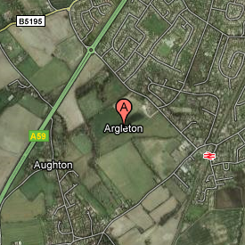
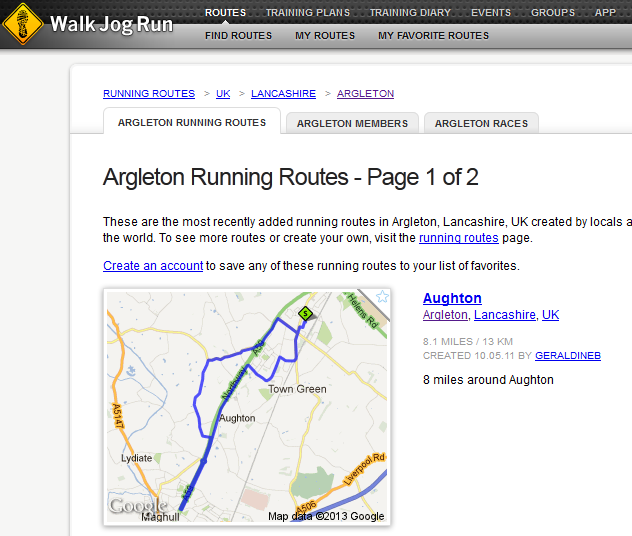
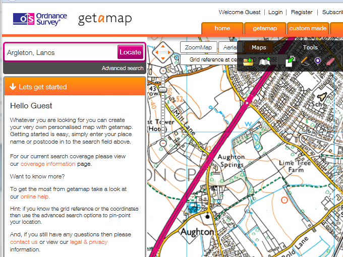

The Argleton affair, and the Wikification of the World-Wide Web
This article discusses the implications that the 'Argleton affair' -- the widespread dissemination of information about a wholly fictitious English village -- might have for how we view the World-Web Web as a source of information. Comments are welcome, as always.The prime of Argleton
The image to the left shows how and where Argleton appeared on Google Maps in its heyday, back in 2009.  The 'village' of Argleton enjoyed a brief notoriety, mostly on the Web, although some people did make the trek to the outskirts of Ormskirk in Lancashire, to see what was, and is, a field. Local businesses stepped up to meet the new interest from tourists, offering 'Argleton Ale' and 'Argleton Pie', and so on. It bears repeating that the village Argleton does not exist, and never has existed. The origins of Argleton remain hazy. At the time, Google blamed the map provider Tele-Atlas for the error. There were rumours that Argleton appeared on in-car sat-nav systems that used data from Tele-Atlas. If that were the case, then that would get Google off the hook, although I've not seen any hard evidence that anything but Google Maps ever showed Argleton. It's possible -- but unlikely -- that Argleton was introduced for the purposes of detecting unlicensed copying of the Tele-Atlas data. Mapping companies do engage in this sort of subterfuge from time to time, but usually only at the level of streets, not whole settlements. More likely, the map provider used scans of paper maps, and Argleton was a mis-reading of the nearby town of Aughton. Its easy to see how an optical character recognition system could make such a mistake. Whatever its origins, Argleton soon disappeared from Google Maps, and faded back into obscurity. Or did it?Argleton's continued existence
Nearly five years after it disappeared from Google Maps, Argleton continued to exert a ghostly presence on the World-Wide Web. You could, for example, look for accommodation in Argleton. Here's what Travel Republic had to offer: 198 hotels and apartments in the area. Sadly, none is actually in Argleton itself. If you were feeling energetic, you could even have gone for a walk or a run around Argleton. In fact, there is a public footpath that approaches within a hundred yards or so of the putative location of the village, so this might be the best way to see it.
 The list of Argleton sightings goes on on; but what knocked me back slightly is that the British Ordnance Survey Web site listed Argleton as a place for nearly ten years. It was not in precisely the same place as Google Maps had it, but it's probably close enough to be accounted for by the conversion between map datums. Just to be clear -- that's the Ordnance Survey, right? Picture generations of bedraggled individuals in long socks stomping, red-face and glassy-eyed, across our green and pleasant land, with a sandwich and a Thermos, and a map in a transparent plastic case. The organization that millions of hardy treckers have trusted their lives, or at least their holidays, to. That Ordnance Survey.
What's going on here?
To be fair, no Web site that I could find is still displaying Argleton as a place name on its map in 2020, but Argleton was a distinct presence on the web for at least ten years. Given the scale of Google's vast data-mining operation, nobody is very surprised when there are occasional mistakes in Google Maps. For example, not very far from my village Google displays the location of a swimming school. It is in the middle of a suburban street; there might be room for a kids' paddling pool in the back yard, but I doubt you could learn to swim there -- not even after all the rain we've had this year. What's happened, I think, is that Google has scraped the address, either from another Web site, or from another business directory of some sort. Then it's located the address on its map, along with the school name. The address is the correspondence address of the school's administrator; the swimming school itself is located, unsurprisingly, in a sports centre a couple of miles away. This is an understandable mistake -- it's not Google's fault that the swimming school's administrator gave a personal address for correspondence. However, it does demonstrate how error-prone is the strategy of building a map by large-scale data mining. There is no shortage of similar examples, although it's been a while since we've seen one on the scale of Google Maps' locating Gloucester as a suburb of Tewksbury back in 2010. None of this explains the continued existence of Argleton. Whatever we may think of Google's data gathering strategy, dubious mapping information from the Ordnance Survey is a problem of a different order. In the UK, OS maps are regarded with almost religious reverence. To be clear, it's only the on-line OS site that showed Argleton; there's no evidence that the printed maps ever did. Still, this dubious data is coming from somewhere. Tele-Atlas and Google may have expunged Argleton, and yet its geographic location clearly continued to pollute the place-name databases that other Web sites use. It's reasonably clear that Argleton does not exist in the OS's own place-names database. Recently the OS made this data available to download free-of-charge, and it goes down to street level. Among the 800,000-or so entries in the OS place-name database, there are 90 for the modest village I live in, and none whatsoever for Argleton. So where does the OS get the coordinates of a non-existent place from?Why is this a problem?
The Argleton affair shows two things, I believe. First, it shows how thoroughly authoritative data is now polluted by non-authoritative data, to the extent that it's difficult to know what information is reasonably trustworthy. Of course, we always had to be careful about how much trust we put in Web sites (including this one, naturally). However, on-line information is now so diffuse that it's difficult to trace the origins of any specific piece of information. Consequently, it's difficult even for legitimate, reliable site operators to offer any guarantee of the authenticity of their information. At one time we could decide whether to trust on-line content on the same basis that we decided whether to trust print content: the reputation of the provider. However, the OS Web site presents the location of Argleton with exactly the same conviction, no more and no less, than it does of Newport Pagnell, say, or Southampton. There's no warning that the information comes from a less reliable source than the Survey's own information-gathering; but clearly it does. Second, we see just how difficult it is to remove known-bad data from the World-Wide Web once it has become entrenched. I don't know if Argleton still turns up in web searches for hotels and walking routes, but it do so for at least ten years.Closing remarks
The World-Wide Web is now almost certainly the World's most significant research tool. Children learn at school -- not from their teachers, I'm sure -- that Wikipedia is a good source of information for researching school projects. Rather than resisting this trend -- which is probably irresistible -- we should be teaching our children how to assess the reliability of the various information sources they encounter, both in print and on-line. To be able to do this is a crucial life skill. And yet, and yet... What Argleton shows -- and the hundreds of similar Argleton-like episodes show -- is that the whole Web is in danger of becoming one vast Wikipedia. When this happens, every piece of information we encounter will have to be assessed on its own merits, with no context. Does any of us have the skill, or the time, to do this?